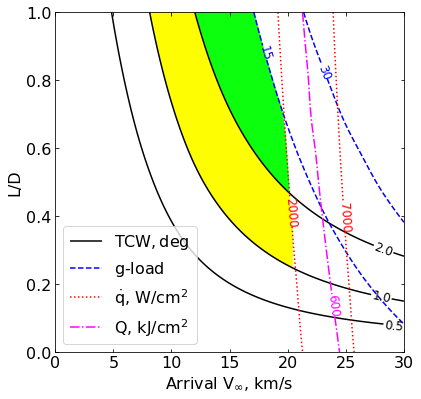
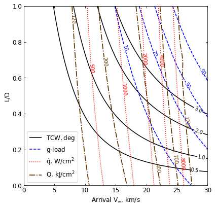

09 - a - Uranus - Feasibility Charts - Lift¶
[1]:
from AMAT.planet import Planet
from AMAT.vehicle import Vehicle
import numpy as np
from scipy import interpolate
import matplotlib.pyplot as plt
from matplotlib import rcParams
from matplotlib.patches import Polygon
import os
[11]:
# Create a planet object for Titan
planet=Planet("URANUS")
planet.h_skip = 1000e3
planet.h_trap = 50e3
# Load an nominal atmospheric profile with height, temp, pressure, density data
planet.loadAtmosphereModel('../atmdata/Uranus/uranus-ames.dat', 0 , 1 , 2, 3)
[4]:
os.makedirs('../data/jsr-paper/uranus/')
[14]:
vinf_kms_array = np.linspace( 0.0, 30.0, 11)
LD_array = np.linspace( 0.0, 1.0 , 11)
[15]:
runID = 'uranus-lift-'
num_total = len(vinf_kms_array)*len(LD_array)
count = 1
v0_kms_array = np.zeros(len(vinf_kms_array))
v0_kms_array[:] = np.sqrt(1.0*(vinf_kms_array[:]*1E3)**2.0 +\
2*np.ones(len(vinf_kms_array))*\
planet.GM/(planet.RP+1000.0*1.0E3))/1.0E3
overShootLimit_array = np.zeros((len(v0_kms_array),len(LD_array)))
underShootLimit_array = np.zeros((len(v0_kms_array),len(LD_array)))
exitflag_os_array = np.zeros((len(v0_kms_array),len(LD_array)))
exitflag_us_array = np.zeros((len(v0_kms_array),len(LD_array)))
TCW_array = np.zeros((len(v0_kms_array),len(LD_array)))
[16]:
for i in range(0,len(v0_kms_array)):
for j in range(0,len(LD_array)):
vehicle=Vehicle('Apollo', 1000.0, 200.0, LD_array[j], 3.1416, 0.0, 1.00, planet)
vehicle.setInitialState(1000.0,0.0,0.0,v0_kms_array[i],0.0,-4.5,0.0,0.0)
vehicle.setSolverParams(1E-6)
overShootLimit_array[i,j], exitflag_os_array[i,j] = vehicle.findOverShootLimit (2400.0, 1.0, -80.0, -4.0, 1E-10, 903323.0)
underShootLimit_array[i,j], exitflag_us_array[i,j] = vehicle.findUnderShootLimit(2400.0, 1.0, -80.0, -4.0, 1E-10, 903323.0)
TCW_array[i,j] = overShootLimit_array[i,j] - underShootLimit_array[i,j]
print("Run #"+str(count)+" of "+ str(num_total)+": Arrival V_infty: "+str(vinf_kms_array[i])+" km/s"+", L/D:"+str(LD_array[j]) + " OSL: "+str(overShootLimit_array[i,j])+" USL: "+str(underShootLimit_array[i,j])+", TCW: "+str(TCW_array[i,j])+" EFOS: "+str(exitflag_os_array[i,j])+ " EFUS: "+str(exitflag_us_array[i,j]))
count = count +1
np.savetxt('../data/jsr-paper/uranus/'+runID+'vinf_kms_array.txt',vinf_kms_array)
np.savetxt('../data/jsr-paper/uranus/'+runID+'v0_kms_array.txt',v0_kms_array)
np.savetxt('../data/jsr-paper/uranus/'+runID+'LD_array.txt',LD_array)
np.savetxt('../data/jsr-paper/uranus/'+runID+'overShootLimit_array.txt',overShootLimit_array)
np.savetxt('../data/jsr-paper/uranus/'+runID+'exitflag_os_array.txt',exitflag_os_array)
np.savetxt('../data/jsr-paper/uranus/'+runID+'undershootLimit_array.txt',underShootLimit_array)
np.savetxt('../data/jsr-paper/uranus/'+runID+'exitflag_us_array.txt',exitflag_us_array)
np.savetxt('../data/jsr-paper/uranus/'+runID+'TCW_array.txt',TCW_array)
Run #1 of 121: Arrival V_infty: 0.0 km/s, L/D:0.0 OSL: -5.9518186230670835 USL: -5.9518186230670835, TCW: 0.0 EFOS: 1.0 EFUS: 1.0
Run #2 of 121: Arrival V_infty: 0.0 km/s, L/D:0.1 OSL: -5.9414695401719655 USL: -5.962387115538149, TCW: 0.020917575366183883 EFOS: 1.0 EFUS: 1.0
Run #3 of 121: Arrival V_infty: 0.0 km/s, L/D:0.2 OSL: -5.931397879779979 USL: -5.972964124273858, TCW: 0.04156624449387891 EFOS: 1.0 EFUS: 1.0
Run #4 of 121: Arrival V_infty: 0.0 km/s, L/D:0.30000000000000004 OSL: -5.920928650484711 USL: -5.983371379697928, TCW: 0.06244272921321681 EFOS: 1.0 EFUS: 1.0
Run #5 of 121: Arrival V_infty: 0.0 km/s, L/D:0.4 OSL: -5.911079677691305 USL: -5.994064441038063, TCW: 0.08298476334675797 EFOS: 1.0 EFUS: 1.0
Run #6 of 121: Arrival V_infty: 0.0 km/s, L/D:0.5 OSL: -5.901329300842917 USL: -6.005066008587164, TCW: 0.10373670774424681 EFOS: 1.0 EFUS: 1.0
Run #7 of 121: Arrival V_infty: 0.0 km/s, L/D:0.6000000000000001 OSL: -5.891926054246142 USL: -6.015635938994819, TCW: 0.12370988474867772 EFOS: 1.0 EFUS: 1.0
Run #8 of 121: Arrival V_infty: 0.0 km/s, L/D:0.7000000000000001 OSL: -5.882608868945681 USL: -6.02698560429053, TCW: 0.1443767353448493 EFOS: 1.0 EFUS: 1.0
Run #9 of 121: Arrival V_infty: 0.0 km/s, L/D:0.8 OSL: -5.873117160390393 USL: -6.038337667207088, TCW: 0.16522050681669498 EFOS: 1.0 EFUS: 1.0
Run #10 of 121: Arrival V_infty: 0.0 km/s, L/D:0.9 OSL: -5.86438990566603 USL: -6.049554638459085, TCW: 0.185164732793055 EFOS: 1.0 EFUS: 1.0
Run #11 of 121: Arrival V_infty: 0.0 km/s, L/D:1.0 OSL: -5.85530441526862 USL: -6.060867839623825, TCW: 0.20556342435520492 EFOS: 1.0 EFUS: 1.0
Run #12 of 121: Arrival V_infty: 3.0 km/s, L/D:0.0 OSL: -6.251480472950789 USL: -6.251480472950789, TCW: 0.0 EFOS: 1.0 EFUS: 1.0
Run #13 of 121: Arrival V_infty: 3.0 km/s, L/D:0.1 OSL: -6.234629989769019 USL: -6.268476594093954, TCW: 0.03384660432493547 EFOS: 1.0 EFUS: 1.0
Run #14 of 121: Arrival V_infty: 3.0 km/s, L/D:0.2 OSL: -6.217653019386489 USL: -6.286025874022016, TCW: 0.06837285463552689 EFOS: 1.0 EFUS: 1.0
Run #15 of 121: Arrival V_infty: 3.0 km/s, L/D:0.30000000000000004 OSL: -6.2025083261032705 USL: -6.303734181456093, TCW: 0.10122585535282269 EFOS: 1.0 EFUS: 1.0
Run #16 of 121: Arrival V_infty: 3.0 km/s, L/D:0.4 OSL: -6.1865600264427485 USL: -6.32168780655411, TCW: 0.13512778011136106 EFOS: 1.0 EFUS: 1.0
Run #17 of 121: Arrival V_infty: 3.0 km/s, L/D:0.5 OSL: -6.170806749705662 USL: -6.341010608288343, TCW: 0.17020385858268128 EFOS: 1.0 EFUS: 1.0
Run #18 of 121: Arrival V_infty: 3.0 km/s, L/D:0.6000000000000001 OSL: -6.155884113770298 USL: -6.3590210218244465, TCW: 0.20313690805414808 EFOS: 1.0 EFUS: 1.0
Run #19 of 121: Arrival V_infty: 3.0 km/s, L/D:0.7000000000000001 OSL: -6.140257551574905 USL: -6.378125216830085, TCW: 0.23786766525518033 EFOS: 1.0 EFUS: 1.0
Run #20 of 121: Arrival V_infty: 3.0 km/s, L/D:0.8 OSL: -6.125790484958998 USL: -6.397613606055529, TCW: 0.2718231210965314 EFOS: 1.0 EFUS: 1.0
Run #21 of 121: Arrival V_infty: 3.0 km/s, L/D:0.9 OSL: -6.111238114135631 USL: -6.417134416835324, TCW: 0.3058963026996935 EFOS: 1.0 EFUS: 1.0
Run #22 of 121: Arrival V_infty: 3.0 km/s, L/D:1.0 OSL: -6.097297254342266 USL: -6.437482126104442, TCW: 0.34018487176217604 EFOS: 1.0 EFUS: 1.0
Run #23 of 121: Arrival V_infty: 6.0 km/s, L/D:0.0 OSL: -6.852999627684767 USL: -6.852999627684767, TCW: 0.0 EFOS: 1.0 EFUS: 1.0
Run #24 of 121: Arrival V_infty: 6.0 km/s, L/D:0.1 OSL: -6.822714052483207 USL: -6.884474181730184, TCW: 0.06176012924697716 EFOS: 1.0 EFUS: 1.0
Run #25 of 121: Arrival V_infty: 6.0 km/s, L/D:0.2 OSL: -6.793593410795438 USL: -6.917497826805629, TCW: 0.1239044160101912 EFOS: 1.0 EFUS: 1.0
Run #26 of 121: Arrival V_infty: 6.0 km/s, L/D:0.30000000000000004 OSL: -6.765831663906283 USL: -6.951939994702116, TCW: 0.18610833079583244 EFOS: 1.0 EFUS: 1.0
Run #27 of 121: Arrival V_infty: 6.0 km/s, L/D:0.4 OSL: -6.739193322966457 USL: -6.987871498145978, TCW: 0.24867817517952062 EFOS: 1.0 EFUS: 1.0
Run #28 of 121: Arrival V_infty: 6.0 km/s, L/D:0.5 OSL: -6.713488027373387 USL: -7.025401432376384, TCW: 0.311913405002997 EFOS: 1.0 EFUS: 1.0
Run #29 of 121: Arrival V_infty: 6.0 km/s, L/D:0.6000000000000001 OSL: -6.688717020486365 USL: -7.064442072962265, TCW: 0.37572505247590016 EFOS: 1.0 EFUS: 1.0
Run #30 of 121: Arrival V_infty: 6.0 km/s, L/D:0.7000000000000001 OSL: -6.664851693774835 USL: -7.105171077615523, TCW: 0.4403193838406878 EFOS: 1.0 EFUS: 1.0
Run #31 of 121: Arrival V_infty: 6.0 km/s, L/D:0.8 OSL: -6.641188081026485 USL: -7.147302555331407, TCW: 0.5061144743049226 EFOS: 1.0 EFUS: 1.0
Run #32 of 121: Arrival V_infty: 6.0 km/s, L/D:0.9 OSL: -6.618518741950538 USL: -7.19168986870136, TCW: 0.5731711267508217 EFOS: 1.0 EFUS: 1.0
Run #33 of 121: Arrival V_infty: 6.0 km/s, L/D:1.0 OSL: -6.596596938987204 USL: -7.237396854165127, TCW: 0.6407999151779222 EFOS: 1.0 EFUS: 1.0
Run #34 of 121: Arrival V_infty: 9.0 km/s, L/D:0.0 OSL: -7.519871048480127 USL: -7.519871048480127, TCW: 0.0 EFOS: 1.0 EFUS: 1.0
Run #35 of 121: Arrival V_infty: 9.0 km/s, L/D:0.1 OSL: -7.467808108533063 USL: -7.577349576204142, TCW: 0.10954146767107886 EFOS: 1.0 EFUS: 1.0
Run #36 of 121: Arrival V_infty: 9.0 km/s, L/D:0.2 OSL: -7.421634184491268 USL: -7.63987676544275, TCW: 0.21824258095148252 EFOS: 1.0 EFUS: 1.0
Run #37 of 121: Arrival V_infty: 9.0 km/s, L/D:0.30000000000000004 OSL: -7.380591869816271 USL: -7.707830024817667, TCW: 0.3272381550013961 EFOS: 1.0 EFUS: 1.0
Run #38 of 121: Arrival V_infty: 9.0 km/s, L/D:0.4 OSL: -7.343104235584178 USL: -7.7816149185964605, TCW: 0.43851068301228224 EFOS: 1.0 EFUS: 1.0
Run #39 of 121: Arrival V_infty: 9.0 km/s, L/D:0.5 OSL: -7.308513109470368 USL: -7.861477074246068, TCW: 0.5529639647756994 EFOS: 1.0 EFUS: 1.0
Run #40 of 121: Arrival V_infty: 9.0 km/s, L/D:0.6000000000000001 OSL: -7.276259829021001 USL: -7.947116799528885, TCW: 0.6708569705078844 EFOS: 1.0 EFUS: 1.0
Run #41 of 121: Arrival V_infty: 9.0 km/s, L/D:0.7000000000000001 OSL: -7.245893656654516 USL: -8.038983154099697, TCW: 0.7930894974451803 EFOS: 1.0 EFUS: 1.0
Run #42 of 121: Arrival V_infty: 9.0 km/s, L/D:0.8 OSL: -7.217376608670747 USL: -8.136995402895991, TCW: 0.9196187942252436 EFOS: 1.0 EFUS: 1.0
Run #43 of 121: Arrival V_infty: 9.0 km/s, L/D:0.9 OSL: -7.191125243749411 USL: -8.241778849125694, TCW: 1.050653605376283 EFOS: 1.0 EFUS: 1.0
Run #44 of 121: Arrival V_infty: 9.0 km/s, L/D:1.0 OSL: -7.166129188000923 USL: -8.352987666101399, TCW: 1.1868584781004756 EFOS: 1.0 EFUS: 1.0
Run #45 of 121: Arrival V_infty: 12.0 km/s, L/D:0.0 OSL: -8.230232143730973 USL: -8.230232143730973, TCW: 0.0 EFOS: 1.0 EFUS: 1.0
Run #46 of 121: Arrival V_infty: 12.0 km/s, L/D:0.1 OSL: -8.150681685496238 USL: -8.32199027081515, TCW: 0.17130858531891135 EFOS: 1.0 EFUS: 1.0
Run #47 of 121: Arrival V_infty: 12.0 km/s, L/D:0.2 OSL: -8.081219219220657 USL: -8.426732378666202, TCW: 0.34551315944554517 EFOS: 1.0 EFUS: 1.0
Run #48 of 121: Arrival V_infty: 12.0 km/s, L/D:0.30000000000000004 OSL: -8.02093218878872 USL: -8.543997226468491, TCW: 0.5230650376797712 EFOS: 1.0 EFUS: 1.0
Run #49 of 121: Arrival V_infty: 12.0 km/s, L/D:0.4 OSL: -7.967743809334934 USL: -8.675350439414615, TCW: 0.707606630079681 EFOS: 1.0 EFUS: 1.0
Run #50 of 121: Arrival V_infty: 12.0 km/s, L/D:0.5 OSL: -7.921500897999067 USL: -8.82177708708332, TCW: 0.9002761890842521 EFOS: 1.0 EFUS: 1.0
Run #51 of 121: Arrival V_infty: 12.0 km/s, L/D:0.6000000000000001 OSL: -7.8827176911254355 USL: -8.982179698639811, TCW: 1.0994620075143757 EFOS: 1.0 EFUS: 1.0
Run #52 of 121: Arrival V_infty: 12.0 km/s, L/D:0.7000000000000001 OSL: -7.849537614405563 USL: -9.156531553955574, TCW: 1.3069939395500114 EFOS: 1.0 EFUS: 1.0
Run #53 of 121: Arrival V_infty: 12.0 km/s, L/D:0.8 OSL: -7.819603993866622 USL: -9.34485862305155, TCW: 1.5252546291849285 EFOS: 1.0 EFUS: 1.0
Run #54 of 121: Arrival V_infty: 12.0 km/s, L/D:0.9 OSL: -7.7916087797275395 USL: -9.546851022678311, TCW: 1.7552422429507715 EFOS: 1.0 EFUS: 1.0
Run #55 of 121: Arrival V_infty: 12.0 km/s, L/D:1.0 OSL: -7.7646402274294815 USL: -9.761809159947006, TCW: 1.9971689325175248 EFOS: 1.0 EFUS: 1.0
Run #56 of 121: Arrival V_infty: 15.0 km/s, L/D:0.0 OSL: -8.907755598396761 USL: -8.907755598396761, TCW: 0.0 EFOS: 1.0 EFUS: 1.0
Run #57 of 121: Arrival V_infty: 15.0 km/s, L/D:0.1 OSL: -8.79673374034246 USL: -9.041538012465026, TCW: 0.24480427212256473 EFOS: 1.0 EFUS: 1.0
Run #58 of 121: Arrival V_infty: 15.0 km/s, L/D:0.2 OSL: -8.703786614922137 USL: -9.198762325537245, TCW: 0.49497571061510826 EFOS: 1.0 EFUS: 1.0
Run #59 of 121: Arrival V_infty: 15.0 km/s, L/D:0.30000000000000004 OSL: -8.62709877268935 USL: -9.381659216116532, TCW: 0.7545604434271809 EFOS: 1.0 EFUS: 1.0
Run #60 of 121: Arrival V_infty: 15.0 km/s, L/D:0.4 OSL: -8.563451155881921 USL: -9.591141711727687, TCW: 1.0276905558457656 EFOS: 1.0 EFUS: 1.0
Run #61 of 121: Arrival V_infty: 15.0 km/s, L/D:0.5 OSL: -8.50959468308065 USL: -9.826530304904736, TCW: 1.3169356218240864 EFOS: 1.0 EFUS: 1.0
Run #62 of 121: Arrival V_infty: 15.0 km/s, L/D:0.6000000000000001 OSL: -8.463769323909219 USL: -10.088233128819411, TCW: 1.6244638049101923 EFOS: 1.0 EFUS: 1.0
Run #63 of 121: Arrival V_infty: 15.0 km/s, L/D:0.7000000000000001 OSL: -8.424123422613775 USL: -10.375268032552412, TCW: 1.9511446099386376 EFOS: 1.0 EFUS: 1.0
Run #64 of 121: Arrival V_infty: 15.0 km/s, L/D:0.8 OSL: -8.390515215498453 USL: -10.685993707116722, TCW: 2.295478491618269 EFOS: 1.0 EFUS: 1.0
Run #65 of 121: Arrival V_infty: 15.0 km/s, L/D:0.9 OSL: -8.36213611625135 USL: -11.019286538507004, TCW: 2.657150422255654 EFOS: 1.0 EFUS: 1.0
Run #66 of 121: Arrival V_infty: 15.0 km/s, L/D:1.0 OSL: -8.334370934779145 USL: -11.373546416765748, TCW: 3.0391754819866037 EFOS: 1.0 EFUS: 1.0
Run #67 of 121: Arrival V_infty: 18.0 km/s, L/D:0.0 OSL: -9.520651161918067 USL: -9.520651161918067, TCW: 0.0 EFOS: 1.0 EFUS: 1.0
Run #68 of 121: Arrival V_infty: 18.0 km/s, L/D:0.1 OSL: -9.376120468859881 USL: -9.700652555766283, TCW: 0.3245320869064017 EFOS: 1.0 EFUS: 1.0
Run #69 of 121: Arrival V_infty: 18.0 km/s, L/D:0.2 OSL: -9.260710687962273 USL: -9.919608909625822, TCW: 0.6588982216635486 EFOS: 1.0 EFUS: 1.0
Run #70 of 121: Arrival V_infty: 18.0 km/s, L/D:0.30000000000000004 OSL: -9.169827024565166 USL: -10.180909722261276, TCW: 1.0110826976961107 EFOS: 1.0 EFUS: 1.0
Run #71 of 121: Arrival V_infty: 18.0 km/s, L/D:0.4 OSL: -9.095808707359538 USL: -10.484619269846007, TCW: 1.3888105624864693 EFOS: 1.0 EFUS: 1.0
Run #72 of 121: Arrival V_infty: 18.0 km/s, L/D:0.5 OSL: -9.036161596864986 USL: -10.83037560833327, TCW: 1.7942140114682843 EFOS: 1.0 EFUS: 1.0
Run #73 of 121: Arrival V_infty: 18.0 km/s, L/D:0.6000000000000001 OSL: -8.985811022768758 USL: -11.216190214916423, TCW: 2.230379192147666 EFOS: 1.0 EFUS: 1.0
Run #74 of 121: Arrival V_infty: 18.0 km/s, L/D:0.7000000000000001 OSL: -8.94229801237816 USL: -11.639471273072559, TCW: 2.6971732606943988 EFOS: 1.0 EFUS: 1.0
Run #75 of 121: Arrival V_infty: 18.0 km/s, L/D:0.8 OSL: -8.904486492381693 USL: -12.09772129914927, TCW: 3.1932348067675775 EFOS: 1.0 EFUS: 1.0
Run #76 of 121: Arrival V_infty: 18.0 km/s, L/D:0.9 OSL: -8.872047124565142 USL: -12.587504386901855, TCW: 3.715457262336713 EFOS: 1.0 EFUS: 1.0
Run #77 of 121: Arrival V_infty: 18.0 km/s, L/D:1.0 OSL: -8.843593724024686 USL: -13.106666215280711, TCW: 4.263072491256025 EFOS: 1.0 EFUS: 1.0
Run #78 of 121: Arrival V_infty: 21.0 km/s, L/D:0.0 OSL: -10.05749935438871 USL: -10.05749935438871, TCW: 0.0 EFOS: 1.0 EFUS: 1.0
Run #79 of 121: Arrival V_infty: 21.0 km/s, L/D:0.1 OSL: -9.87926284864443 USL: -10.28675932509941, TCW: 0.40749647645498044 EFOS: 1.0 EFUS: 1.0
Run #80 of 121: Arrival V_infty: 21.0 km/s, L/D:0.2 OSL: -9.743357881190605 USL: -10.574544540177158, TCW: 0.8311866589865531 EFOS: 1.0 EFUS: 1.0
Run #81 of 121: Arrival V_infty: 21.0 km/s, L/D:0.30000000000000004 OSL: -9.638588580626674 USL: -10.924413964636187, TCW: 1.285825384009513 EFOS: 1.0 EFUS: 1.0
Run #82 of 121: Arrival V_infty: 21.0 km/s, L/D:0.4 OSL: -9.557489843195071 USL: -11.336241334814986, TCW: 1.7787514916199143 EFOS: 1.0 EFUS: 1.0
Run #83 of 121: Arrival V_infty: 21.0 km/s, L/D:0.5 OSL: -9.491565668562544 USL: -11.807905104706151, TCW: 2.3163394361436076 EFOS: 1.0 EFUS: 1.0
Run #84 of 121: Arrival V_infty: 21.0 km/s, L/D:0.6000000000000001 OSL: -9.437814337936288 USL: -12.333935736296553, TCW: 2.8961213983602647 EFOS: 1.0 EFUS: 1.0
Run #85 of 121: Arrival V_infty: 21.0 km/s, L/D:0.7000000000000001 OSL: -9.391733021144319 USL: -12.911759704849828, TCW: 3.5200266837055096 EFOS: 1.0 EFUS: 1.0
Run #86 of 121: Arrival V_infty: 21.0 km/s, L/D:0.8 OSL: -9.351492226549453 USL: -13.533846618287498, TCW: 4.182354391738045 EFOS: 1.0 EFUS: 1.0
Run #87 of 121: Arrival V_infty: 21.0 km/s, L/D:0.9 OSL: -9.315336941588612 USL: -14.196703940560838, TCW: 4.881366998972226 EFOS: 1.0 EFUS: 1.0
Run #88 of 121: Arrival V_infty: 21.0 km/s, L/D:1.0 OSL: -9.284159555045335 USL: -14.893755529163172, TCW: 5.609595974117838 EFOS: 1.0 EFUS: 1.0
Run #89 of 121: Arrival V_infty: 24.0 km/s, L/D:0.0 OSL: -10.520071507289686 USL: -10.520071507289686, TCW: 0.0 EFOS: 1.0 EFUS: 1.0
Run #90 of 121: Arrival V_infty: 24.0 km/s, L/D:0.1 OSL: -10.309504139637284 USL: -10.800786836134648, TCW: 0.49128269649736467 EFOS: 1.0 EFUS: 1.0
Run #91 of 121: Arrival V_infty: 24.0 km/s, L/D:0.2 OSL: -10.15379944725646 USL: -11.162181669347774, TCW: 1.0083822220913135 EFOS: 1.0 EFUS: 1.0
Run #92 of 121: Arrival V_infty: 24.0 km/s, L/D:0.30000000000000004 OSL: -10.038259889592155 USL: -11.608741062620538, TCW: 1.5704811730283836 EFOS: 1.0 EFUS: 1.0
Run #93 of 121: Arrival V_infty: 24.0 km/s, L/D:0.4 OSL: -9.950103010654857 USL: -12.137984981010959, TCW: 2.187881970356102 EFOS: 1.0 EFUS: 1.0
Run #94 of 121: Arrival V_infty: 24.0 km/s, L/D:0.5 OSL: -9.879739208496176 USL: -12.745867249705043, TCW: 2.866128041208867 EFOS: 1.0 EFUS: 1.0
Run #95 of 121: Arrival V_infty: 24.0 km/s, L/D:0.6000000000000001 OSL: -9.82234273384529 USL: -13.423567377998552, TCW: 3.6012246441532625 EFOS: 1.0 EFUS: 1.0
Run #96 of 121: Arrival V_infty: 24.0 km/s, L/D:0.7000000000000001 OSL: -9.773826107724744 USL: -14.16367480667759, TCW: 4.3898486989528465 EFOS: 1.0 EFUS: 1.0
Run #97 of 121: Arrival V_infty: 24.0 km/s, L/D:0.8 OSL: -9.731847962932079 USL: -14.957407834695914, TCW: 5.225559871763835 EFOS: 1.0 EFUS: 1.0
Run #98 of 121: Arrival V_infty: 24.0 km/s, L/D:0.9 OSL: -9.69420696342786 USL: -15.79624481553401, TCW: 6.10203785210615 EFOS: 1.0 EFUS: 1.0
Run #99 of 121: Arrival V_infty: 24.0 km/s, L/D:1.0 OSL: -9.660662254660565 USL: -16.675034603227687, TCW: 7.014372348567122 EFOS: 1.0 EFUS: 1.0
Run #100 of 121: Arrival V_infty: 27.0 km/s, L/D:0.0 OSL: -10.916218152971851 USL: -10.916218152971851, TCW: 0.0 EFOS: 1.0 EFUS: 1.0
Run #101 of 121: Arrival V_infty: 27.0 km/s, L/D:0.1 OSL: -10.673990373252309 USL: -11.249090849330969, TCW: 0.57510047607866 EFOS: 1.0 EFUS: 1.0
Run #102 of 121: Arrival V_infty: 27.0 km/s, L/D:0.2 OSL: -10.501481864099333 USL: -11.687544530941523, TCW: 1.18606266684219 EFOS: 1.0 EFUS: 1.0
Run #103 of 121: Arrival V_infty: 27.0 km/s, L/D:0.30000000000000004 OSL: -10.376474367898481 USL: -12.235432153491274, TCW: 1.8589577855927928 EFOS: 1.0 EFUS: 1.0
Run #104 of 121: Arrival V_infty: 27.0 km/s, L/D:0.4 OSL: -10.281951485234458 USL: -12.888910943525843, TCW: 2.606959458291385 EFOS: 1.0 EFUS: 1.0
Run #105 of 121: Arrival V_infty: 27.0 km/s, L/D:0.5 OSL: -10.208542882795882 USL: -13.637401683459757, TCW: 3.4288588006638747 EFOS: 1.0 EFUS: 1.0
Run #106 of 121: Arrival V_infty: 27.0 km/s, L/D:0.6000000000000001 OSL: -10.14769344656088 USL: -14.469907089900516, TCW: 4.322213643339637 EFOS: 1.0 EFUS: 1.0
Run #107 of 121: Arrival V_infty: 27.0 km/s, L/D:0.7000000000000001 OSL: -10.097106687284395 USL: -15.371188081189757, TCW: 5.274081393905362 EFOS: 1.0 EFUS: 1.0
Run #108 of 121: Arrival V_infty: 27.0 km/s, L/D:0.8 OSL: -10.053139664814807 USL: -16.335977665432438, TCW: 6.28283800061763 EFOS: 1.0 EFUS: 1.0
Run #109 of 121: Arrival V_infty: 27.0 km/s, L/D:0.9 OSL: -10.014251971108024 USL: -17.354609306752536, TCW: 7.340357335644512 EFOS: 1.0 EFUS: 1.0
Run #110 of 121: Arrival V_infty: 27.0 km/s, L/D:1.0 OSL: -9.979242760316993 USL: -18.420471123390598, TCW: 8.441228363073606 EFOS: 1.0 EFUS: 1.0
Run #111 of 121: Arrival V_infty: 30.0 km/s, L/D:0.0 OSL: -11.255171326738491 USL: -11.255171326738491, TCW: 0.0 EFOS: 1.0 EFUS: 1.0
Run #112 of 121: Arrival V_infty: 30.0 km/s, L/D:0.1 OSL: -10.983217781827989 USL: -11.640436191217304, TCW: 0.6572184093893156 EFOS: 1.0 EFUS: 1.0
Run #113 of 121: Arrival V_infty: 30.0 km/s, L/D:0.2 OSL: -10.794917572278791 USL: -12.15715901841395, TCW: 1.3622414461351582 EFOS: 1.0 EFUS: 1.0
Run #114 of 121: Arrival V_infty: 30.0 km/s, L/D:0.30000000000000004 OSL: -10.661472898362263 USL: -12.80931716941268, TCW: 2.147844271050417 EFOS: 1.0 EFUS: 1.0
Run #115 of 121: Arrival V_infty: 30.0 km/s, L/D:0.4 OSL: -10.562517329639377 USL: -13.5877179912859, TCW: 3.0252006616465223 EFOS: 1.0 EFUS: 1.0
Run #116 of 121: Arrival V_infty: 30.0 km/s, L/D:0.5 OSL: -10.48561768811851 USL: -14.475570224651165, TCW: 3.9899525365326554 EFOS: 1.0 EFUS: 1.0
Run #117 of 121: Arrival V_infty: 30.0 km/s, L/D:0.6000000000000001 OSL: -10.422583929295797 USL: -15.458632647136255, TCW: 5.036048717840458 EFOS: 1.0 EFUS: 1.0
Run #118 of 121: Arrival V_infty: 30.0 km/s, L/D:0.7000000000000001 OSL: -10.369858040721738 USL: -16.527748416399845, TCW: 6.157890375678107 EFOS: 1.0 EFUS: 1.0
Run #119 of 121: Arrival V_infty: 30.0 km/s, L/D:0.8 OSL: -10.324447614559176 USL: -17.66916951623716, TCW: 7.344721901677985 EFOS: 1.0 EFUS: 1.0
Run #120 of 121: Arrival V_infty: 30.0 km/s, L/D:0.9 OSL: -10.284034929067275 USL: -18.872117528913805, TCW: 8.58808259984653 EFOS: 1.0 EFUS: 1.0
Run #121 of 121: Arrival V_infty: 30.0 km/s, L/D:1.0 OSL: -10.248097073348617 USL: -20.126741409578244, TCW: 9.878644336229627 EFOS: 1.0 EFUS: 1.0
[17]:
acc_net_g_max_array = np.zeros((len(v0_kms_array),len(LD_array)))
stag_pres_atm_max_array = np.zeros((len(v0_kms_array),len(LD_array)))
q_stag_total_max_array = np.zeros((len(v0_kms_array),len(LD_array)))
heatload_max_array = np.zeros((len(v0_kms_array),len(LD_array)))
for i in range(0,len(v0_kms_array)):
for j in range(0,len(LD_array)):
vehicle=Vehicle('Apollo', 1000.0, 200.0, LD_array[j], 3.1416, 0.0, 1.00, planet)
vehicle.setInitialState(1000.0,0.0,0.0,v0_kms_array[i],0.0,overShootLimit_array[i,j],0.0,0.0)
vehicle.setSolverParams(1E-6)
vehicle.propogateEntry (2400.0, 1.0, 180.0)
# Extract and save variables to plot
t_min_os = vehicle.t_minc
h_km_os = vehicle.h_kmc
acc_net_g_os = vehicle.acc_net_g
q_stag_con_os = vehicle.q_stag_con
q_stag_rad_os = vehicle.q_stag_rad
rc_os = vehicle.rc
vc_os = vehicle.vc
stag_pres_atm_os = vehicle.computeStagPres(rc_os,vc_os)/(1.01325E5)
heatload_os = vehicle.heatload
vehicle=Vehicle('Apollo', 1000.0, 200.0, LD_array[j], 3.1416, 0.0, 1.00, planet)
vehicle.setInitialState(1000.0,0.0,0.0,v0_kms_array[i],0.0,underShootLimit_array[i,j],0.0,0.0)
vehicle.setSolverParams(1E-6)
vehicle.propogateEntry (2400.0, 1.0, 0.0)
# Extract and save variable to plot
t_min_us = vehicle.t_minc
h_km_us = vehicle.h_kmc
acc_net_g_us = vehicle.acc_net_g
q_stag_con_us = vehicle.q_stag_con
q_stag_rad_us = vehicle.q_stag_rad
rc_us = vehicle.rc
vc_us = vehicle.vc
stag_pres_atm_us = vehicle.computeStagPres(rc_us,vc_us)/(1.01325E5)
heatload_us = vehicle.heatload
q_stag_total_os = q_stag_con_os + q_stag_rad_os
q_stag_total_us = q_stag_con_us + q_stag_rad_us
acc_net_g_max_array[i,j] = max(max(acc_net_g_os),max(acc_net_g_us))
stag_pres_atm_max_array[i,j] = max(max(stag_pres_atm_os),max(stag_pres_atm_os))
q_stag_total_max_array[i,j] = max(max(q_stag_total_os),max(q_stag_total_us))
heatload_max_array[i,j] = max(max(heatload_os),max(heatload_os))
print("V_infty: "+str(vinf_kms_array[i])+" km/s"+", L/D: "+str(LD_array[j])+" G_MAX: "+str(acc_net_g_max_array[i,j])+" QDOT_MAX: "+str(q_stag_total_max_array[i,j])+" J_MAX: "+str(heatload_max_array[i,j])+" STAG. PRES: "+str(stag_pres_atm_max_array[i,j]))
np.savetxt('../data/jsr-paper/uranus/'+runID+'acc_net_g_max_array.txt',acc_net_g_max_array)
np.savetxt('../data/jsr-paper/uranus/'+runID+'stag_pres_atm_max_array.txt',stag_pres_atm_max_array)
np.savetxt('../data/jsr-paper/uranus/'+runID+'q_stag_total_max_array.txt',q_stag_total_max_array)
np.savetxt('../data/jsr-paper/uranus/'+runID+'heatload_max_array.txt',heatload_max_array)
V_infty: 0.0 km/s, L/D: 0.0 G_MAX: 0.1090402582343576 QDOT_MAX: 101.2430626156118 J_MAX: 45856.024178671505 STAG. PRES: 0.002116296073824336
V_infty: 0.0 km/s, L/D: 0.1 G_MAX: 0.11037959489661121 QDOT_MAX: 101.57675104840278 J_MAX: 46030.99168536434 STAG. PRES: 0.002102274289794844
V_infty: 0.0 km/s, L/D: 0.2 G_MAX: 0.11282185446968376 QDOT_MAX: 101.91208897281038 J_MAX: 46213.35626917764 STAG. PRES: 0.002089245210272968
V_infty: 0.0 km/s, L/D: 0.30000000000000004 G_MAX: 0.11628680398778453 QDOT_MAX: 102.22426425475935 J_MAX: 46368.1151206564 STAG. PRES: 0.002074410311675287
V_infty: 0.0 km/s, L/D: 0.4 G_MAX: 0.12083903079089854 QDOT_MAX: 102.56063123661768 J_MAX: 46551.74772576325 STAG. PRES: 0.002061748382729338
V_infty: 0.0 km/s, L/D: 0.5 G_MAX: 0.12640411167607513 QDOT_MAX: 102.91399807344816 J_MAX: 46736.10276047755 STAG. PRES: 0.0020491619565642777
V_infty: 0.0 km/s, L/D: 0.6000000000000001 G_MAX: 0.1327864775022335 QDOT_MAX: 103.24808243871645 J_MAX: 46946.38157097875 STAG. PRES: 0.0020374806766573113
V_infty: 0.0 km/s, L/D: 0.7000000000000001 G_MAX: 0.14024111874591824 QDOT_MAX: 103.66986783162454 J_MAX: 47131.50100518118 STAG. PRES: 0.0020244766901428932
V_infty: 0.0 km/s, L/D: 0.8 G_MAX: 0.14857555347756635 QDOT_MAX: 104.13357299978908 J_MAX: 47303.656824478865 STAG. PRES: 0.002010430061604033
V_infty: 0.0 km/s, L/D: 0.9 G_MAX: 0.15729868655769863 QDOT_MAX: 104.49900500036229 J_MAX: 47503.458246293674 STAG. PRES: 0.0019978451531759067
V_infty: 0.0 km/s, L/D: 1.0 G_MAX: 0.16667412073287652 QDOT_MAX: 104.87674785647509 J_MAX: 47699.61602586981 STAG. PRES: 0.001983723551238657
V_infty: 3.0 km/s, L/D: 0.0 G_MAX: 0.18587443989872293 QDOT_MAX: 130.4592872231255 J_MAX: 57434.9849013763 STAG. PRES: 0.003606884323984941
V_infty: 3.0 km/s, L/D: 0.1 G_MAX: 0.18995158037456394 QDOT_MAX: 131.45342078681517 J_MAX: 57811.287795617485 STAG. PRES: 0.003545962634981126
V_infty: 3.0 km/s, L/D: 0.2 G_MAX: 0.19618381439870577 QDOT_MAX: 132.5086103387869 J_MAX: 58156.06647140268 STAG. PRES: 0.003480808572402402
V_infty: 3.0 km/s, L/D: 0.30000000000000004 G_MAX: 0.20433924552232813 QDOT_MAX: 133.5503570161175 J_MAX: 58630.192360045105 STAG. PRES: 0.003435728099717701
V_infty: 3.0 km/s, L/D: 0.4 G_MAX: 0.21442421168823153 QDOT_MAX: 134.5896924881814 J_MAX: 59005.430128350796 STAG. PRES: 0.003377256744583855
V_infty: 3.0 km/s, L/D: 0.5 G_MAX: 0.22738174947425474 QDOT_MAX: 135.8979100545251 J_MAX: 59366.304788892616 STAG. PRES: 0.003318493421665904
V_infty: 3.0 km/s, L/D: 0.6000000000000001 G_MAX: 0.24074335568211674 QDOT_MAX: 136.82862932858527 J_MAX: 59824.26880728836 STAG. PRES: 0.0032719694514162525
V_infty: 3.0 km/s, L/D: 0.7000000000000001 G_MAX: 0.2561573490547589 QDOT_MAX: 137.85445180722581 J_MAX: 60172.336893814536 STAG. PRES: 0.0032139811631137108
V_infty: 3.0 km/s, L/D: 0.8 G_MAX: 0.2735810619140423 QDOT_MAX: 138.98238678501355 J_MAX: 60561.75213655221 STAG. PRES: 0.003162799648138839
V_infty: 3.0 km/s, L/D: 0.9 G_MAX: 0.2916810038069253 QDOT_MAX: 139.91955438977817 J_MAX: 60953.86514617467 STAG. PRES: 0.003111167119972836
V_infty: 3.0 km/s, L/D: 1.0 G_MAX: 0.31160332413997577 QDOT_MAX: 140.9562514723526 J_MAX: 61361.51657870328 STAG. PRES: 0.0030619053376226986
V_infty: 6.0 km/s, L/D: 0.0 G_MAX: 0.5069413447827317 QDOT_MAX: 212.87759482562535 J_MAX: 80236.00260975654 STAG. PRES: 0.009834019967000285
V_infty: 6.0 km/s, L/D: 0.1 G_MAX: 0.5332541636094262 QDOT_MAX: 217.3245926032154 J_MAX: 81557.26053990066 STAG. PRES: 0.009384033952244424
V_infty: 6.0 km/s, L/D: 0.2 G_MAX: 0.5667171556421338 QDOT_MAX: 221.92561591072422 J_MAX: 82876.12251149694 STAG. PRES: 0.008945521129622611
V_infty: 6.0 km/s, L/D: 0.30000000000000004 G_MAX: 0.6072257891549349 QDOT_MAX: 226.5481755254416 J_MAX: 84242.20007612747 STAG. PRES: 0.008535759256724269
V_infty: 6.0 km/s, L/D: 0.4 G_MAX: 0.6556770551445077 QDOT_MAX: 231.274232320342 J_MAX: 85597.93935573881 STAG. PRES: 0.008136701021142627
V_infty: 6.0 km/s, L/D: 0.5 G_MAX: 0.7124783134088902 QDOT_MAX: 236.10564168631433 J_MAX: 86942.9511220152 STAG. PRES: 0.007750108881381531
V_infty: 6.0 km/s, L/D: 0.6000000000000001 G_MAX: 0.7780707307732329 QDOT_MAX: 241.0541021540451 J_MAX: 88283.7377491679 STAG. PRES: 0.007376481855244986
V_infty: 6.0 km/s, L/D: 0.7000000000000001 G_MAX: 0.8536099599696245 QDOT_MAX: 246.2381739164809 J_MAX: 89649.30895536207 STAG. PRES: 0.007019529797007445
V_infty: 6.0 km/s, L/D: 0.8 G_MAX: 0.9378814588068985 QDOT_MAX: 251.43265078420794 J_MAX: 90981.75398486512 STAG. PRES: 0.006671216451149694
V_infty: 6.0 km/s, L/D: 0.9 G_MAX: 1.0319575400342385 QDOT_MAX: 256.74305996384754 J_MAX: 92299.0715143207 STAG. PRES: 0.006338586774477649
V_infty: 6.0 km/s, L/D: 1.0 G_MAX: 1.1367337713225862 QDOT_MAX: 262.25924449761703 J_MAX: 93626.95384713092 STAG. PRES: 0.0060263693100626485
V_infty: 9.0 km/s, L/D: 0.0 G_MAX: 1.051564315503073 QDOT_MAX: 318.37901108309325 J_MAX: 104507.19199544757 STAG. PRES: 0.020393049019572132
V_infty: 9.0 km/s, L/D: 0.1 G_MAX: 1.122069814394027 QDOT_MAX: 325.42472290240266 J_MAX: 107587.37222601783 STAG. PRES: 0.019391074804698826
V_infty: 9.0 km/s, L/D: 0.2 G_MAX: 1.2167459139316832 QDOT_MAX: 334.57341256228983 J_MAX: 110816.92932079472 STAG. PRES: 0.018340626197631077
V_infty: 9.0 km/s, L/D: 0.30000000000000004 G_MAX: 1.3297636732955997 QDOT_MAX: 344.5222701098924 J_MAX: 114185.00357278757 STAG. PRES: 0.017054040626339084
V_infty: 9.0 km/s, L/D: 0.4 G_MAX: 1.4595852520350954 QDOT_MAX: 354.2935195283254 J_MAX: 117593.39932314683 STAG. PRES: 0.015671813616105743
V_infty: 9.0 km/s, L/D: 0.5 G_MAX: 1.6108630803831958 QDOT_MAX: 364.04191191593725 J_MAX: 121000.32391041373 STAG. PRES: 0.014413651277572208
V_infty: 9.0 km/s, L/D: 0.6000000000000001 G_MAX: 1.7861789119653506 QDOT_MAX: 374.0251650657326 J_MAX: 124396.1017510657 STAG. PRES: 0.013306966439595879
V_infty: 9.0 km/s, L/D: 0.7000000000000001 G_MAX: 1.9829562469851343 QDOT_MAX: 384.1772401417596 J_MAX: 127775.09135013523 STAG. PRES: 0.012329663391603487
V_infty: 9.0 km/s, L/D: 0.8 G_MAX: 2.1948940871484437 QDOT_MAX: 393.9358679446918 J_MAX: 131140.36202649036 STAG. PRES: 0.011461356613801967
V_infty: 9.0 km/s, L/D: 0.9 G_MAX: 2.4199050562936972 QDOT_MAX: 403.02237017952217 J_MAX: 134460.87245965912 STAG. PRES: 0.010682273525003175
V_infty: 9.0 km/s, L/D: 1.0 G_MAX: 2.6637254627867772 QDOT_MAX: 411.4283073177354 J_MAX: 137767.66015358682 STAG. PRES: 0.009979813458472835
V_infty: 12.0 km/s, L/D: 0.0 G_MAX: 1.7862325258295018 QDOT_MAX: 445.0433897253314 J_MAX: 133338.00663531997 STAG. PRES: 0.03463331437564545
V_infty: 12.0 km/s, L/D: 0.1 G_MAX: 1.966238091634569 QDOT_MAX: 464.81875910745623 J_MAX: 139173.82821378228 STAG. PRES: 0.03125791776047696
V_infty: 12.0 km/s, L/D: 0.2 G_MAX: 2.1858226188410756 QDOT_MAX: 482.8713918971306 J_MAX: 145211.9769120538 STAG. PRES: 0.028196709057054826
V_infty: 12.0 km/s, L/D: 0.30000000000000004 G_MAX: 2.466537923276898 QDOT_MAX: 501.4472046323427 J_MAX: 151415.09624566283 STAG. PRES: 0.025465852066824862
V_infty: 12.0 km/s, L/D: 0.4 G_MAX: 2.769089467818695 QDOT_MAX: 522.6200249224803 J_MAX: 157684.8450310947 STAG. PRES: 0.022994674924121078
V_infty: 12.0 km/s, L/D: 0.5 G_MAX: 3.0972196316652787 QDOT_MAX: 541.8717096215073 J_MAX: 164043.96888998913 STAG. PRES: 0.021209793399798553
V_infty: 12.0 km/s, L/D: 0.6000000000000001 G_MAX: 3.4921014661046206 QDOT_MAX: 559.1259614953467 J_MAX: 170545.64497046845 STAG. PRES: 0.019544324558191824
V_infty: 12.0 km/s, L/D: 0.7000000000000001 G_MAX: 3.9437425771911503 QDOT_MAX: 577.3842824526511 J_MAX: 177085.70014128057 STAG. PRES: 0.017730436333392333
V_infty: 12.0 km/s, L/D: 0.8 G_MAX: 4.430989022768288 QDOT_MAX: 596.3573866952223 J_MAX: 183525.90822601135 STAG. PRES: 0.016105430693438234
V_infty: 12.0 km/s, L/D: 0.9 G_MAX: 4.961573507683341 QDOT_MAX: 614.2929409338717 J_MAX: 189842.9126056078 STAG. PRES: 0.014749657565313684
V_infty: 12.0 km/s, L/D: 1.0 G_MAX: 5.544983741733933 QDOT_MAX: 631.2707379628412 J_MAX: 195972.46121911035 STAG. PRES: 0.013605045987161281
V_infty: 15.0 km/s, L/D: 0.0 G_MAX: 2.774340652184764 QDOT_MAX: 638.1022644902157 J_MAX: 169773.35476333296 STAG. PRES: 0.05378343082878653
V_infty: 15.0 km/s, L/D: 0.1 G_MAX: 3.1357366159561617 QDOT_MAX: 674.4419354138704 J_MAX: 179535.78191287236 STAG. PRES: 0.04704422003044997
V_infty: 15.0 km/s, L/D: 0.2 G_MAX: 3.601053254757068 QDOT_MAX: 708.4504259583899 J_MAX: 189696.93624279182 STAG. PRES: 0.04132099521013143
V_infty: 15.0 km/s, L/D: 0.30000000000000004 G_MAX: 4.120472552805178 QDOT_MAX: 741.2634497661662 J_MAX: 200211.8701109276 STAG. PRES: 0.03644621539745654
V_infty: 15.0 km/s, L/D: 0.4 G_MAX: 4.721465505413278 QDOT_MAX: 777.3424027023278 J_MAX: 210917.89798037635 STAG. PRES: 0.03206891494618197
V_infty: 15.0 km/s, L/D: 0.5 G_MAX: 5.425352218356713 QDOT_MAX: 810.9222286664758 J_MAX: 221619.20084743973 STAG. PRES: 0.0284783907072941
V_infty: 15.0 km/s, L/D: 0.6000000000000001 G_MAX: 6.204793465289903 QDOT_MAX: 843.678958611088 J_MAX: 232258.54264758254 STAG. PRES: 0.02548657242010007
V_infty: 15.0 km/s, L/D: 0.7000000000000001 G_MAX: 7.056565860997439 QDOT_MAX: 877.1765575725931 J_MAX: 242642.76866308512 STAG. PRES: 0.023441764773400067
V_infty: 15.0 km/s, L/D: 0.8 G_MAX: 8.039612524666202 QDOT_MAX: 909.7226953330754 J_MAX: 253144.9234617641 STAG. PRES: 0.0214763286381165
V_infty: 15.0 km/s, L/D: 0.9 G_MAX: 9.11851151244071 QDOT_MAX: 939.8310253453101 J_MAX: 263314.85718752706 STAG. PRES: 0.019599971973632252
V_infty: 15.0 km/s, L/D: 1.0 G_MAX: 10.26922808929866 QDOT_MAX: 969.0311644986805 J_MAX: 273130.2112327014 STAG. PRES: 0.017999001556916288
V_infty: 18.0 km/s, L/D: 0.0 G_MAX: 4.030948835673565 QDOT_MAX: 1002.9874351544522 J_MAX: 224635.30026158673 STAG. PRES: 0.0781344140154704
V_infty: 18.0 km/s, L/D: 0.1 G_MAX: 4.700310515723279 QDOT_MAX: 1065.0928395011492 J_MAX: 240149.28858244888 STAG. PRES: 0.06657160822704203
V_infty: 18.0 km/s, L/D: 0.2 G_MAX: 5.520627461952985 QDOT_MAX: 1122.3696503383728 J_MAX: 256441.56092274946 STAG. PRES: 0.057374718679203775
V_infty: 18.0 km/s, L/D: 0.30000000000000004 G_MAX: 6.444786067476501 QDOT_MAX: 1187.4728214518361 J_MAX: 273263.2271097039 STAG. PRES: 0.04897862196925591
V_infty: 18.0 km/s, L/D: 0.4 G_MAX: 7.537924015762504 QDOT_MAX: 1248.78036733191 J_MAX: 290116.5837078394 STAG. PRES: 0.042784939371298236
V_infty: 18.0 km/s, L/D: 0.5 G_MAX: 8.766176850970039 QDOT_MAX: 1310.6762908380745 J_MAX: 306896.307887205 STAG. PRES: 0.037470600312051607
V_infty: 18.0 km/s, L/D: 0.6000000000000001 G_MAX: 10.156240404397126 QDOT_MAX: 1372.5711837571066 J_MAX: 323339.56101985264 STAG. PRES: 0.03331716439664907
V_infty: 18.0 km/s, L/D: 0.7000000000000001 G_MAX: 11.71151981567194 QDOT_MAX: 1430.1360934559236 J_MAX: 339360.4106028781 STAG. PRES: 0.02990090892618242
V_infty: 18.0 km/s, L/D: 0.8 G_MAX: 13.412808892600873 QDOT_MAX: 1486.4716287674603 J_MAX: 354931.80998719815 STAG. PRES: 0.027504068618418746
V_infty: 18.0 km/s, L/D: 0.9 G_MAX: 15.346934597459015 QDOT_MAX: 1543.2807607165428 J_MAX: 370065.37584435486 STAG. PRES: 0.025443063264039348
V_infty: 18.0 km/s, L/D: 1.0 G_MAX: 17.456112496908872 QDOT_MAX: 1596.0452128373495 J_MAX: 384769.4123134736 STAG. PRES: 0.023423991194367284
V_infty: 21.0 km/s, L/D: 0.0 G_MAX: 5.5877034850697544 QDOT_MAX: 1865.4244016327175 J_MAX: 326274.2832087736 STAG. PRES: 0.10829744321647228
V_infty: 21.0 km/s, L/D: 0.1 G_MAX: 6.700303042977563 QDOT_MAX: 1993.4730466736726 J_MAX: 351384.227609173 STAG. PRES: 0.09053665796578333
V_infty: 21.0 km/s, L/D: 0.2 G_MAX: 8.029206475369351 QDOT_MAX: 2110.840825657647 J_MAX: 377741.096827726 STAG. PRES: 0.07551238950189793
V_infty: 21.0 km/s, L/D: 0.30000000000000004 G_MAX: 9.560985618617227 QDOT_MAX: 2245.699640162727 J_MAX: 404312.763643828 STAG. PRES: 0.06422728878083293
V_infty: 21.0 km/s, L/D: 0.4 G_MAX: 11.34924889301785 QDOT_MAX: 2372.3853504259696 J_MAX: 431124.3563849051 STAG. PRES: 0.05490018371700919
V_infty: 21.0 km/s, L/D: 0.5 G_MAX: 13.355559936797121 QDOT_MAX: 2500.790642037115 J_MAX: 457092.1961475746 STAG. PRES: 0.04812057557537198
V_infty: 21.0 km/s, L/D: 0.6000000000000001 G_MAX: 15.684577683457697 QDOT_MAX: 2628.4357604034076 J_MAX: 482353.1222954918 STAG. PRES: 0.042543045841315914
V_infty: 21.0 km/s, L/D: 0.7000000000000001 G_MAX: 18.250321146378198 QDOT_MAX: 2745.719316499919 J_MAX: 506695.6770856811 STAG. PRES: 0.03818220684841469
V_infty: 21.0 km/s, L/D: 0.8 G_MAX: 21.140000649351546 QDOT_MAX: 2862.816414887849 J_MAX: 530195.9863662831 STAG. PRES: 0.034573660562169144
V_infty: 21.0 km/s, L/D: 0.9 G_MAX: 24.45289115659391 QDOT_MAX: 2976.7216837246524 J_MAX: 552845.6100773612 STAG. PRES: 0.03196232389268016
V_infty: 21.0 km/s, L/D: 1.0 G_MAX: 28.210212892021328 QDOT_MAX: 3084.1649315913637 J_MAX: 574765.7472003683 STAG. PRES: 0.029762817508431964
V_infty: 24.0 km/s, L/D: 0.0 G_MAX: 7.484015977308703 QDOT_MAX: 4200.124944135723 J_MAX: 547877.010287714 STAG. PRES: 0.14503360755488784
V_infty: 24.0 km/s, L/D: 0.1 G_MAX: 9.17990588445119 QDOT_MAX: 4511.228338846646 J_MAX: 591967.9910059756 STAG. PRES: 0.11820009812964409
V_infty: 24.0 km/s, L/D: 0.2 G_MAX: 11.204304482602792 QDOT_MAX: 4804.350358629743 J_MAX: 637443.5739494626 STAG. PRES: 0.09732209369753095
V_infty: 24.0 km/s, L/D: 0.30000000000000004 G_MAX: 13.561008550618354 QDOT_MAX: 5134.6126230657355 J_MAX: 682835.7006000404 STAG. PRES: 0.08129684663051652
V_infty: 24.0 km/s, L/D: 0.4 G_MAX: 16.36064455027732 QDOT_MAX: 5450.1916709069055 J_MAX: 727105.3521312928 STAG. PRES: 0.06915062399900582
V_infty: 24.0 km/s, L/D: 0.5 G_MAX: 19.507416261765545 QDOT_MAX: 5768.227710569047 J_MAX: 769720.5760595631 STAG. PRES: 0.060304620075694745
V_infty: 24.0 km/s, L/D: 0.6000000000000001 G_MAX: 23.219128557440897 QDOT_MAX: 6079.305473744261 J_MAX: 810671.609317392 STAG. PRES: 0.05332272039012773
V_infty: 24.0 km/s, L/D: 0.7000000000000001 G_MAX: 27.57623581470543 QDOT_MAX: 6364.847392342401 J_MAX: 849884.8582017538 STAG. PRES: 0.04774489875146841
V_infty: 24.0 km/s, L/D: 0.8 G_MAX: 32.66279380770087 QDOT_MAX: 6654.847492143761 J_MAX: 887719.2260964646 STAG. PRES: 0.0432699262945637
V_infty: 24.0 km/s, L/D: 0.9 G_MAX: 39.30398091035945 QDOT_MAX: 6932.752892930583 J_MAX: 923859.1305217042 STAG. PRES: 0.03951849561580796
V_infty: 24.0 km/s, L/D: 1.0 G_MAX: 47.427064993377236 QDOT_MAX: 7190.4133382731325 J_MAX: 958884.2365495492 STAG. PRES: 0.03678468911950146
V_infty: 27.0 km/s, L/D: 0.0 G_MAX: 9.711811247809925 QDOT_MAX: 10709.835677929828 J_MAX: 1072186.417484603 STAG. PRES: 0.18818783745332243
V_infty: 27.0 km/s, L/D: 0.1 G_MAX: 12.14877276158875 QDOT_MAX: 11561.063084290563 J_MAX: 1158919.8245666064 STAG. PRES: 0.1507252396033831
V_infty: 27.0 km/s, L/D: 0.2 G_MAX: 15.100234218884209 QDOT_MAX: 12376.045955025322 J_MAX: 1246593.3772686913 STAG. PRES: 0.12178289079265027
V_infty: 27.0 km/s, L/D: 0.30000000000000004 G_MAX: 18.648966607398496 QDOT_MAX: 13291.920361062472 J_MAX: 1331738.689585758 STAG. PRES: 0.1004732497734868
V_infty: 27.0 km/s, L/D: 0.4 G_MAX: 22.78760395946223 QDOT_MAX: 14158.085274268704 J_MAX: 1413226.7315820495 STAG. PRES: 0.08573448270661627
V_infty: 27.0 km/s, L/D: 0.5 G_MAX: 27.856597234177222 QDOT_MAX: 15045.435863099921 J_MAX: 1490329.8604392065 STAG. PRES: 0.0739667414684513
V_infty: 27.0 km/s, L/D: 0.6000000000000001 G_MAX: 34.062921080662456 QDOT_MAX: 15878.769478914648 J_MAX: 1564057.394880169 STAG. PRES: 0.06565698993378866
V_infty: 27.0 km/s, L/D: 0.7000000000000001 G_MAX: 42.804024338728226 QDOT_MAX: 16673.642713977428 J_MAX: 1530803.151521349 STAG. PRES: 0.058636653972262164
V_infty: 27.0 km/s, L/D: 0.8 G_MAX: 53.27108238259486 QDOT_MAX: 17466.85631634403 J_MAX: 1701316.67412192 STAG. PRES: 0.053155140847146225
V_infty: 27.0 km/s, L/D: 0.9 G_MAX: 65.60539826569887 QDOT_MAX: 18201.413045171907 J_MAX: 1765766.8390743341 STAG. PRES: 0.04854475361537273
V_infty: 27.0 km/s, L/D: 1.0 G_MAX: 80.17488920893584 QDOT_MAX: 18917.30980356591 J_MAX: 1827463.6144230089 STAG. PRES: 0.044709209901353124
V_infty: 30.0 km/s, L/D: 0.0 G_MAX: 12.29254085330182 QDOT_MAX: 28680.379021332876 J_MAX: 2337729.3655774514 STAG. PRES: 0.23817150892191583
V_infty: 30.0 km/s, L/D: 0.1 G_MAX: 15.655361353018858 QDOT_MAX: 31065.649018855165 J_MAX: 2527584.8037244673 STAG. PRES: 0.18714410270664697
V_infty: 30.0 km/s, L/D: 0.2 G_MAX: 19.8755577836531 QDOT_MAX: 33461.41957606978 J_MAX: 2714146.3443973074 STAG. PRES: 0.14920473849121885
V_infty: 30.0 km/s, L/D: 0.30000000000000004 G_MAX: 24.933447738897215 QDOT_MAX: 36035.1047279274 J_MAX: 2891157.9946602727 STAG. PRES: 0.12263818978803208
V_infty: 30.0 km/s, L/D: 0.4 G_MAX: 31.302413281196674 QDOT_MAX: 38555.536810910686 J_MAX: 3057156.7853474068 STAG. PRES: 0.10404412495565281
V_infty: 30.0 km/s, L/D: 0.5 G_MAX: 40.11046148648928 QDOT_MAX: 41066.52806320823 J_MAX: 3212805.222622822 STAG. PRES: 0.08962819989160854
V_infty: 30.0 km/s, L/D: 0.6000000000000001 G_MAX: 52.12785731443632 QDOT_MAX: 43369.25473110754 J_MAX: 3360056.4338141275 STAG. PRES: 0.07939632197290038
V_infty: 30.0 km/s, L/D: 0.7000000000000001 G_MAX: 66.59299773606264 QDOT_MAX: 45643.88365281003 J_MAX: 3500571.8189659617 STAG. PRES: 0.07105037966020795
V_infty: 30.0 km/s, L/D: 0.8 G_MAX: 84.19447970694604 QDOT_MAX: 47842.984418806845 J_MAX: 3633967.6277569197 STAG. PRES: 0.06424111129690452
V_infty: 30.0 km/s, L/D: 0.9 G_MAX: 105.65051299199446 QDOT_MAX: 49934.279316912325 J_MAX: 3761866.0082948273 STAG. PRES: 0.058718001901563226
V_infty: 30.0 km/s, L/D: 1.0 G_MAX: 129.6986617206044 QDOT_MAX: 51933.54834703978 J_MAX: 3881108.9365113587 STAG. PRES: 0.053989833746519555
[18]:
x = np.loadtxt('../data/jsr-paper/uranus/'+runID+'vinf_kms_array.txt')
y = np.loadtxt('../data/jsr-paper/uranus/'+runID+'LD_array.txt')
Z1 = np.loadtxt('../data/jsr-paper/uranus/'+runID+'TCW_array.txt')
G1 = np.loadtxt('../data/jsr-paper/uranus/'+runID+'acc_net_g_max_array.txt')
Q1 = np.loadtxt('../data/jsr-paper/uranus/'+runID+'q_stag_total_max_array.txt')
H1 = np.loadtxt('../data/jsr-paper/uranus/'+runID+'heatload_max_array.txt')
S1 = np.loadtxt('../data/jsr-paper/uranus/'+runID+'stag_pres_atm_max_array.txt')
f1 = interpolate.interp2d(x, y, np.transpose(Z1), kind='cubic')
g1 = interpolate.interp2d(x, y, np.transpose(G1), kind='cubic')
q1 = interpolate.interp2d(x, y, np.transpose(Q1), kind='cubic')
h1 = interpolate.interp2d(x, y, np.transpose(H1), kind='cubic')
#s1 = interpolate.interp2d(x, y, transpose(S1), kind='cubic')
x_new = np.linspace( 0.0, 30, 310)
y_new = np.linspace( 0.0, 1.0 ,110)
z_new = np.zeros((len(x_new),len(y_new)))
z1_new = np.zeros((len(x_new),len(y_new)))
g1_new = np.zeros((len(x_new),len(y_new)))
q1_new = np.zeros((len(x_new),len(y_new)))
h1_new = np.zeros((len(x_new),len(y_new)))
#s1_new = np.zeros((len(x_new),len(y_new)))
for i in range(0,len(x_new)):
for j in range(0,len(y_new)):
z1_new[i,j] = f1(x_new[i],y_new[j])
g1_new[i,j] = g1(x_new[i],y_new[j])
q1_new[i,j] = q1(x_new[i],y_new[j])
h1_new[i,j] = h1(x_new[i],y_new[j])
#s1_new[i,j] = s1(x_new[i],y_new[j])
Z1 = z1_new
G1 = g1_new
Q1 = q1_new
#S1 = s1_new
H1 = h1_new/1000.0
X, Y = np.meshgrid(x_new, y_new)
Zlevels = np.array([0.5,1.0, 2.0])
Glevels = np.array([15, 30])
Qlevels = np.array([2000, 7000])
Hlevels = np.array([600])
#Slevels = np.array([0.8])
plt.figure()
#plt.rcParams["font.family"] = "Times New Roman"
#plt.xlim([0.0,30.0])
#plt.ylim([0.0,0.4])
#plt.tight_layout()
#plt.contourf(X, Y, Z, levels=levels)
#plt.axvline(x=25.0,linewidth=3, linestyle='dotted' ,color='red',label=r'$Max.$'+' '+r'$arrival$'+' '+r'$V_{\infty}$'+ r' ' +r'$(LV$'+r' '+r'$C3$'+r' '+r'$limit)$')
#plt.axvline(x=13.1,linewidth=1, linestyle='dotted' ,color='cyan',label=r'$Max.$'+' '+r'$arrival$'+' '+r'$V_{\infty}$'+ r' ' +r'$(Chem. OI)$')
fig = plt.figure()
fig.set_size_inches([6.25,6.25])
rcParams['font.family'] = 'sans-serif'
rcParams['font.sans-serif'] = ['DejaVu Sans']
ZCS1 = plt.contour(X, Y, np.transpose(Z1), levels=Zlevels, colors='black')
plt.clabel(ZCS1, inline=1, fontsize=12, colors='black',fmt='%.1f',inline_spacing=1)
ZCS1.collections[0].set_linewidths(1.5)
ZCS1.collections[1].set_linewidths(1.5)
ZCS1.collections[2].set_linewidths(1.5)
ZCS1.collections[0].set_label(r'$TCW, deg$')
GCS1 = plt.contour(X, Y, np.transpose(G1), levels=Glevels, colors='blue',linestyles='dashed')
plt.clabel(GCS1, inline=1, fontsize=12, colors='blue',fmt='%d',inline_spacing=0)
GCS1.collections[0].set_linewidths(1.5)
GCS1.collections[1].set_linewidths(1.5)
GCS1.collections[0].set_label(r'$g$'+r'-load')
QCS1 = plt.contour(X, Y, np.transpose(Q1), levels=Qlevels, colors='red',linestyles='dotted')
plt.clabel(QCS1, inline=1, fontsize=12, colors='red',fmt='%d',inline_spacing=0)
QCS1.collections[0].set_linewidths(1.5)
QCS1.collections[0].set_label(r'$\dot{q}$'+', '+r'$W/cm^2$')
HCS1 = plt.contour(X, Y, np.transpose(H1), levels=Hlevels, colors='magenta',linestyles='dashdot')
plt.clabel(HCS1, inline=1, fontsize=12, colors='magenta',fmt='%d',inline_spacing=0)
HCS1.collections[0].set_linewidths(1.5)
HCS1.collections[0].set_label(r'$Q$'+', '+r'$kJ/cm^2$')
#SCS1 = plt.contour(X, Y, transpose(S1), levels=Slevels, colors='cyan')
#plt.clabel(SCS1, inline=1, fontsize=12, colors='cyan',fmt='%.1f',inline_spacing=1)
#SCS1.collections[0].set_linewidths(3.0)
#SCS1.collections[0].set_label(r'$Peak$'+r' '+r'$stag. pressure,atm$')
#plt.axhline(y=0.36,linewidth=1, linestyle='dotted' ,color='white',label=r'$Apollo$'+' '+r'$CM$'+' '+r'$L/D$')
#matplotlib.rcParams['text.usetex'] = True
#plt.rc('text', usetex=True)
# circles for b=50 plot
#plt.plot(7.5,0.20,marker='o',mfc='none',mec='k',markersize=16,markeredgewidth=3.0)
#plt.plot(4.95,0.30,marker='o',mfc='none',mec='k',markersize=16,markeredgewidth=3.0)
#plt.plot(7.5,0.211,marker='o',mfc='none',mec='k',markersize=16,markeredgewidth=3.0)
#plt.plot(4.95,0.315,marker='o',mfc='none',mec='k',markersize=16,markeredgewidth=3.0)
#plt.grid(True,linestyle='dotted', linewidth=0.1)
params = {'mathtext.default': 'regular' }
params = {'mathtext.default': 'regular' }
plt.rcParams.update(params)
plt.ylabel("L/D",fontsize=16)
plt.xlabel("Arrival "+r'$V_\infty$'+r', km/s' ,fontsize=16)
plt.xticks( fontsize=16)
plt.yticks(fontsize=16)
ax = plt.gca()
ax.tick_params(direction='in')
ax.yaxis.set_ticks_position('both')
ax.xaxis.set_ticks_position('both')
plt.legend(loc='lower left', fontsize=16)
dat0 = ZCS1.allsegs[2][0]
x1,y1=dat0[:,0],dat0[:,1]
F1 = interpolate.interp1d(x1, y1, kind='linear',fill_value='extrapolate', bounds_error=False)
dat1 = GCS1.allsegs[0][0]
x2,y2=dat1[:,0],dat1[:,1]
F2 = interpolate.interp1d(x2, y2, kind='linear',fill_value='extrapolate', bounds_error=False)
dat2 = QCS1.allsegs[0][0]
x3,y3= dat2[:,0],dat2[:,1]
F3 = interpolate.interp1d(x3, y3, kind='linear',fill_value='extrapolate', bounds_error=False)
dat0a = ZCS1.allsegs[1][0]
x1a,y1a=dat0a[:,0],dat0a[:,1]
F1a = interpolate.interp1d(x1a, y1a, kind='linear',fill_value='extrapolate', bounds_error=False)
x4 = np.linspace(0,30,101)
y4 = F1(x4)
y4a =F1a(x4)
y5 = F2(x4)
y6 = F3(x4)
y7 = np.minimum(y5,y6)
y8 = np.minimum(y4,y6)
plt.fill_between(x4, y4, y7, where=y4<=y7,color='xkcd:neon green')
plt.fill_between(x4, y4a, y8, where=y4a<=y8,color='xkcd:bright yellow')
plt.xlim([0.0,30.0])
plt.ylim([0.0,1])
plt.savefig('../data/jsr-paper/uranus/uranus-lift-small.png', dpi= 300,bbox_inches='tight')
plt.savefig('../data/jsr-paper/uranus/uranus-lift-small.pdf', dpi=300,bbox_inches='tight')
plt.savefig('../data/jsr-paper/uranus/uranus-lift-small.eps', dpi=300,bbox_inches='tight')
plt.show()
The PostScript backend does not support transparency; partially transparent artists will be rendered opaque.
The PostScript backend does not support transparency; partially transparent artists will be rendered opaque.
<Figure size 432x288 with 0 Axes>

[19]:
x = np.loadtxt('../data/jsr-paper/uranus/'+runID+'vinf_kms_array.txt')
y = np.loadtxt('../data/jsr-paper/uranus/'+runID+'LD_array.txt')
Z1 = np.loadtxt('../data/jsr-paper/uranus/'+runID+'TCW_array.txt')
G1 = np.loadtxt('../data/jsr-paper/uranus/'+runID+'acc_net_g_max_array.txt')
Q1 = np.loadtxt('../data/jsr-paper/uranus/'+runID+'q_stag_total_max_array.txt')
H1 = np.loadtxt('../data/jsr-paper/uranus/'+runID+'heatload_max_array.txt')
S1 = np.loadtxt('../data/jsr-paper/uranus/'+runID+'stag_pres_atm_max_array.txt')
f1 = interpolate.interp2d(x, y, np.transpose(Z1), kind='cubic')
g1 = interpolate.interp2d(x, y, np.transpose(G1), kind='cubic')
q1 = interpolate.interp2d(x, y, np.transpose(Q1), kind='cubic')
h1 = interpolate.interp2d(x, y, np.transpose(H1), kind='cubic')
#s1 = interpolate.interp2d(x, y, transpose(S1), kind='cubic')
x_new = np.linspace( 0.0, 30, 310)
y_new = np.linspace( 0.0, 1.0 ,110)
z_new = np.zeros((len(x_new),len(y_new)))
z1_new = np.zeros((len(x_new),len(y_new)))
g1_new = np.zeros((len(x_new),len(y_new)))
q1_new = np.zeros((len(x_new),len(y_new)))
h1_new = np.zeros((len(x_new),len(y_new)))
#s1_new = np.zeros((len(x_new),len(y_new)))
for i in range(0,len(x_new)):
for j in range(0,len(y_new)):
z1_new[i,j] = f1(x_new[i],y_new[j])
g1_new[i,j] = g1(x_new[i],y_new[j])
q1_new[i,j] = q1(x_new[i],y_new[j])
h1_new[i,j] = h1(x_new[i],y_new[j])
#s1_new[i,j] = s1(x_new[i],y_new[j])
Z1 = z1_new
G1 = g1_new
Q1 = q1_new
#S1 = s1_new
H1 = h1_new/1000.0
X, Y = np.meshgrid(x_new, y_new)
#X, Y = meshgrid(x, y)
Zlevels = np.array([0.5,1.0,2.0,3.0])
Glevels = np.array([10.0, 20.0, 30.0, 50.0])
Qlevels = np.array([500.0, 1000.0, 2000.0, 4000.0, 8000.0])
Hlevels = np.array([120.0, 200.0, 400.0, 700.0, 1200.0])
#Slevels = np.array([0.8])
fig = plt.figure()
fig.set_size_inches([6.5,6.5])
rcParams['font.family'] = 'sans-serif'
rcParams['font.sans-serif'] = ['DejaVu Sans']
#plt.xlim([0.0,30.0])
#plt.ylim([0.0,0.4])
#plt.tight_layout()
#plt.contourf(X, Y, Z, levels=levels)
#plt.axvline(x=25.0,linewidth=3, linestyle='dotted' ,color='red',label=r'$Max.$'+' '+r'$arrival$'+' '+r'$V_{\infty}$'+ r' ' +r'$(LV$'+r' '+r'$C3$'+r' '+r'$limit)$')
#plt.axvline(x=13.1,linewidth=1, linestyle='dotted' ,color='cyan',label=r'$Max.$'+' '+r'$arrival$'+' '+r'$V_{\infty}$'+ r' ' +r'$(Chem. OI)$')
ZCS1 = plt.contour(X, Y, np.transpose(Z1), levels=Zlevels, colors='black',zorder=0)
plt.clabel(ZCS1, inline=1, fontsize=10, colors='black',fmt='%.1f',inline_spacing=1,zorder=0)
ZCS1.collections[0].set_linewidths(1.5)
ZCS1.collections[1].set_linewidths(1.5)
ZCS1.collections[2].set_linewidths(1.5)
ZCS1.collections[3].set_linewidths(1.5)
ZCS1.collections[0].set_label(r'$TCW, deg$')
GCS1 = plt.contour(X, Y, np.transpose(G1), levels=Glevels, colors='blue',linestyles='dashed',zorder=1)
plt.clabel(GCS1, inline=1, fontsize=10, colors='blue',fmt='%d',inline_spacing=0,zorder=1)
GCS1.collections[0].set_linewidths(1.5)
GCS1.collections[1].set_linewidths(1.5)
GCS1.collections[2].set_linewidths(1.5)
GCS1.collections[3].set_linewidths(1.5)
GCS1.collections[0].set_label(r'$g$'+r'-load')
QCS1 = plt.contour(X, Y, np.transpose(Q1), levels=Qlevels, colors='red',linestyles='dotted',zorder=13)
plt.clabel(QCS1, inline=1, fontsize=10, colors='red',fmt='%d',inline_spacing=0,zorder=13)
QCS1.collections[0].set_linewidths(1.5)
QCS1.collections[1].set_linewidths(1.5)
QCS1.collections[2].set_linewidths(1.5)
QCS1.collections[3].set_linewidths(1.5)
QCS1.collections[4].set_linewidths(1.5)
QCS1.collections[0].set_label(r'$\dot{q}$'+', '+r'$W/cm^2$')
HCS1 = plt.contour(X, Y, np.transpose(H1), levels=Hlevels, colors='xkcd:brown',linestyles='dashdot',zorder=14)
plt.clabel(HCS1, inline=1, fontsize=10, colors='xkcd:brown',fmt='%d',inline_spacing=0,zorder=14)
HCS1.collections[0].set_linewidths(1.75)
HCS1.collections[1].set_linewidths(1.75)
HCS1.collections[2].set_linewidths(1.75)
HCS1.collections[3].set_linewidths(1.75)
HCS1.collections[4].set_linewidths(1.75)
HCS1.collections[0].set_label(r'$Q$'+', '+r'$kJ/cm^2$')
params = {'mathtext.default': 'regular' }
plt.rcParams.update(params)
plt.ylabel("L/D",fontsize=12)
plt.xlabel("Arrival "+r'$V_\infty$'+r', km/s' ,fontsize=12)
plt.xticks(np.array([ 0.0, 5, 10, 15, 20, 25, 30]),fontsize=12)
plt.yticks(np.array([ 0.0, 0.2, 0.4, 0.6, 0.8, 1.0]),fontsize=12)
ax = plt.gca()
ax.tick_params(direction='in')
ax.yaxis.set_ticks_position('both')
ax.xaxis.set_ticks_position('both')
plt.legend(loc='lower left', fontsize=12)
plt.savefig('../data/jsr-paper/uranus/uranus-lift-large.png', dpi= 300,bbox_inches='tight')
plt.savefig('../data/jsr-paper/uranus/uranus-lift-large.pdf', dpi=300,bbox_inches='tight')
plt.savefig('../data/jsr-paper/uranus/uranus-lift-large.eps', dpi=300,bbox_inches='tight')
plt.show()
The PostScript backend does not support transparency; partially transparent artists will be rendered opaque.
The PostScript backend does not support transparency; partially transparent artists will be rendered opaque.
